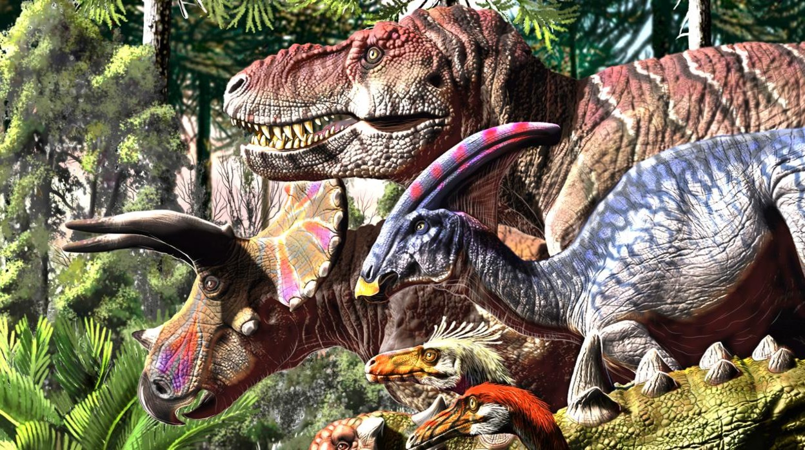

Aprende sobre los dinosaurios


Los dinosaurios (Dinosauria, del griego δεινός deinós ‘terrible’ y σαῦρος sauros ‘lagarto’: ‘lagartos terribles’) son un grupo de saurópsidos. que aparecieron durante el período Triásico. Aunque el origen exacto y su diversificación temprana es tema de activa investigación, el consenso científico actual sitúa su origen entre 231 y 243 millones de años atrás. Fueron los vertebrados terrestres dominantes durante 135 millones de años, desde el inicio del Jurásico (hace unos 200 millones años) hasta el final del Cretácico (hace 66 millones de años), cuando la mayoría de los grupos de dinosaurios se extinguieron durante la extinción masiva del Cretácico-Paleógeno que puso fin a la Era Mesozoica. El registro fósil indica que las aves evolucionaron a partir de dinosaurios terópodos durante el período Jurásico y, en consecuencia, muchos taxónomos consideran que las aves forman un subgrupo dentro de los dinosaurios.Algunas aves sobrevivieron a este acontecimiento, y sus descendientes continúan el linaje de los dinosaurios hasta nuestros días.